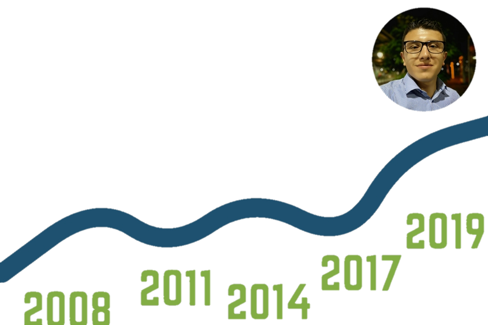
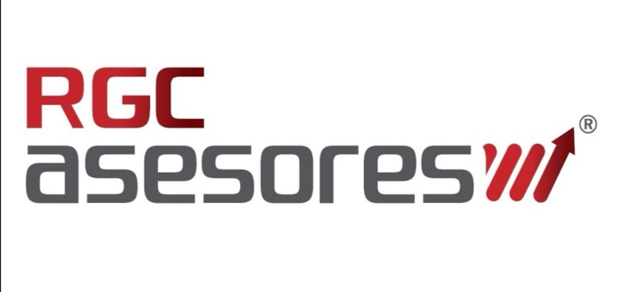

¡Bienvenidos!
Esta página web la cree con el fin de encontrar nuevas personas que me puedan brindar su apoyo para poder continuar con mis estudios profesionales en la carrera de ingeniería en sistemas.
Recuerda que puedes ponerte en contacto con migo dándole click al icono de WhatsApp que se encuentra en la parte superior de esta página.
Me puedes ayudar con:
Tu apoyo
Me puedes ayudar con todo lo que tu creas que aporte a mis sueños de ser un profesional en el mundo del desarrollo web.
Empleo
Me puedes ayudar a conseguir un empleo estable que con sus horarios me permita ejercer una disciplina con mis estudios.
Herramientas
Necesito un computador portátil y para comprarlo me puedes ayudar con un aporte para poder recolectar el dinero.
Educación
Me puedes ayudar con la suscripción de uno de los cursos en plataformas que ofrecen esta carrera online como es Platzi o Udemy.
Quieres conocer mi historia?
Mi historia
Niñez
A los 10 años tomé la calle cuando se separaron mis padres, en aquel entonces llegué a la ciudad de Bogotá, empecé a lustrar zapatos, vender dulces en los buses y Transmilenios. Llevé este estilo de vida hasta los 15 años aproximadamente y gracias a los valores que aprendí en casa nunca caí en los vicios.
Adolecencia
Después de haber pasado por todo esto, continúe con mis estudios de bachillerato, también me di cuenta de la transformación digital por la que actualmente está pasando el mundo entero, de ahí en adelante se despertó en mí el sueño de formarme profesionalmente en el mundo de la ingeniería en sistemas, también empecé a manejar programas como Excel y Access adquiriendo conocimientos que fueron los que le abrieron las puertas a mi primer empleo formal.
Hoy en día
Estoy en la búsqueda de un empleo estable que me permita continuar con mis estudios. También me he puesto estudiar a través de Internet y he aprendido la parte básica de estos dos lenguajes: HTML 5 y CSS que son con los que está construido este sitio web, la educación online me ha parecido una buena opción ya que te mantiene actualizado, avanzas a tu ritmo y todo depende del interés y las ganas que le pongas por aprender y por eso quiero conseguir un computador.
Foto
(Foto tomada en la ciudad Santiago de Cali)
HOJA DE VIDA
Camilo Andres Pardo
Me considero una persona responsable, honesta, dinámica y creativa, con facilidad de adaptación y capacidad de trabajar en equipo, en condiciones de alta presión, con iniciativa de resolver problemas eficientemente y lograr las metas y objetivos trazados por la empresa.
Nivel de estudios
Bachillerato
Experiencia laboral
Empresa
RGC Asesores y Consultores en Salud, es una compañía con más de quince años de experiencia en el sector salud, especialmente en el campo de la Auditoria Médica a empresas del Sistema General de Seguridad Social en Salud en Colombia.
PBX:(57 1) 7427695 EXT 110
Funciones realizadas
Llamadas de control y calidad a pacientes de la ARL Positiva para laverificación de los servicios brindados por los diferentes proveedores y el seguimiento a los casos trazadores.
Auditoria, control y seguimiento a las empresas y vehículos que prestan los servicios de traslados no urgentes para la ARL Positiva.
Manejo de bases de datos con diferentes programas como: Excel y Access.
Tiempo de experiencia
Un año (1)
Sabes que necesito?
¿Que necesito?
Son bastantes cosas las que necesito para continuar con mis estudios pero las mas importantes son las que te dejare acontinuacion.
Una oportunidad laboral
Una oferta laboral y estable que con sus horarios a mí me permita ejercer una disciplina con mis estudios, estoy dispuesto a trabajar en cualquier ciudad del país.
Computador
El computador es una de las herramientas indispensables para esta carrera de la programación, es indispensable a la hora de: editar código, editar imágenes y vídeos, gestionar bases de datos, experimentar y corregir errores, estudiar online y mucho más.
Cursos online
Para continuar con mis estudios necesito la suscripción en una de las dos plataformas para los siguientes cursos: Adobe Illustrator, CSS avanzado, Photoshop, JavaScript, Node JS, Reac JS, C++, .Net, PHP, MySql,
Tu apoyo
Me puedes apoyar de muchas maneras y una de esas es compartir el video que se encuentra al inicio de la página.
Aprendí que con apoyo todo es posible, gracias por ayudarme a demostrar que los sueños se pueden cumplir.
¿Qué quiero estudiar?
Desde hace unos años he soñado con convertirme un profesional en el mundo de la ingeniería en sistemas, a continuación, les dejo unos de los cursos a seguir en mi carrera.
Desarrollo web
Desarrollo web es un término que define la creación de sitios web para Internet o una intranet. Para conseguirlo se hace uso de tecnologías de software del lado del servidor y del cliente.
JavaScript
JavaScript es un lenguaje de programación interpretado y orientado a objetos.
MySQL
MySQL es un sistema de gestión de base de datos relacional de código abierto, basado en lenguaje de consulta estructurado (SQL).
PHP
PHP es un lenguaje de programación de propósito general de código del lado del servidor originalmente diseñado para el desarrollo web de contenido dinámico.